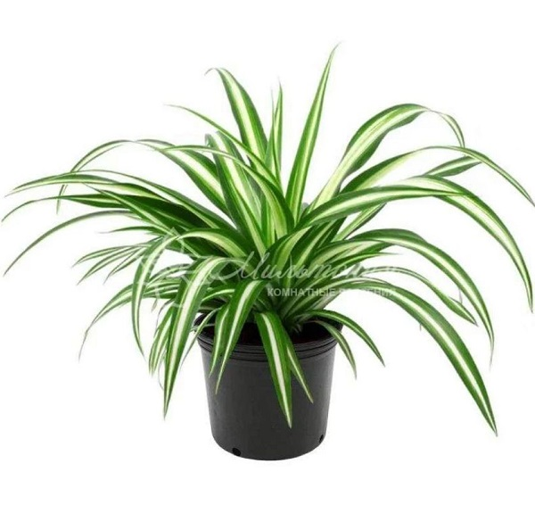

Хлорофитум хохлатый

Нужен рассеянный свет или полутень,
полив раз в неделю летом, раз в 2
недели зимой
Цена: 599 руб
Его Родина - влажные джунгли Южной Африки. Имеет продолговатые зелёные листья с белыми
полосками.
Очищает воздух лучше любого фильтра!
Неприхотлив, идеален для новичков.